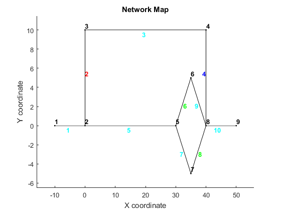
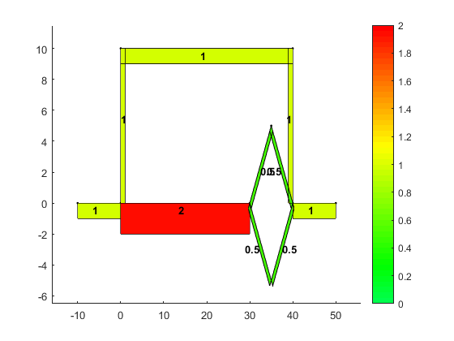
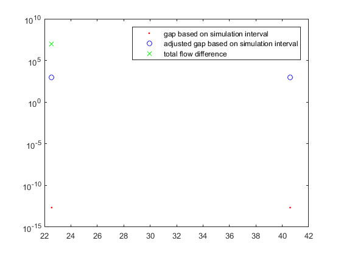
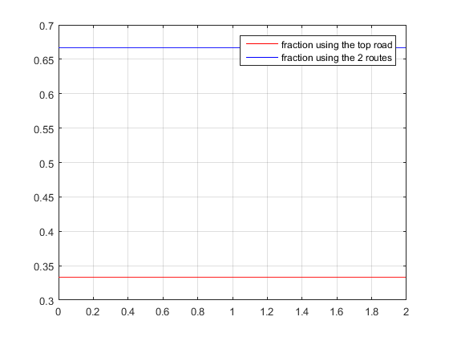
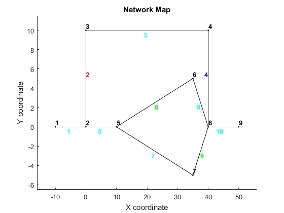
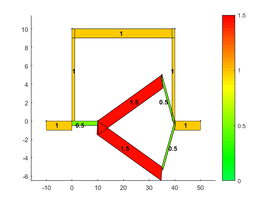
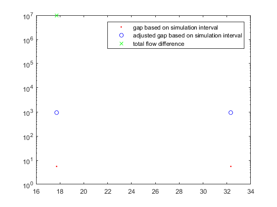

Contents
% A classic example in traffic assignments is the so called 3 route % problem. % Here we will discus how RL behavives in these curcumstances.
add path
addpath('../MatlabTrafficToolbox/Dynamic Traffic Assignment','../MatlabTrafficToolbox/Visualization Tools','../MatlabTrafficToolbox/Network Data') javaclasspath('../MatlabTrafficToolbox/Dynamic Traffic Assignment');
javaclasspath('/MatlabTrafficToolbox/Dynamic Traffic Assignment') addpath(genpath(pwd)) clear clc close all
In the first network, the node where route 2 and 3 split, is close to the destination
load dym_3path.mat plotNetwork(nodes,links,true,[]); %special to this network is the identical cost for each route plotLoadedLinks(nodes,links,links.length,true,[],1,[]); 
Setup the simulation
%setup the time interval and total number of time steps dt = 0.001; totT = round(2/dt); %build the full ODmatrix [ODmatrix,origins,destinations] = buildODmatrix(ODmatrices,timeSeries,dt,totT);
Setup the dynamic equilibrium simulation
%time interval for the route choice rc_dt = dt; %maximum number of iterations max_it = 20; %scaling of the updates over iterations (<1) alpha = 0.5; %scaling of the utility (logit) mu = 1; %run DTA with deterministic route choice and MSA averaging [cvn_up,cvn_down,TF] = DTA_RL(nodes,links,origins,destinations,ODmatrix,dt,totT,rc_dt,max_it,alpha,mu);
gap =
2.1852e-13
gap_flow =
9.9083e+06
gap =
2.1852e-13
gap_flow =
0
Convergence reached in iteration 2 Gap: 0 Gap: 2.1852e-13
 Visualize the split rates at the diverge
The following lines of code visualize the splitting rates at the first diverge.
sp=[TF{2,:,1}];
figure(10);plot(dt*[0:totT-1],sp(1:2:end),'r',dt*[0:totT-1],sp(2:2:end),'b');
grid on;
legend('fraction using the top road', 'fraction using the 2 routes');
 Change the intersection node more to the origin:
load dym_3path2.mat plotNetwork(nodes,links,true,[]); %special to this network is the identical cost for each route plotLoadedLinks(nodes,links,links.length,true,[],1,[]); 
[cvn_up,cvn_down,TF] = DTA_RL(nodes,links,origins,destinations,ODmatrix,dt,totT,rc_dt,max_it,alpha,mu);
sp=[TF{2,:,1}];
figure(10);plot(dt*[0:totT-1],sp(1:2:end),'r',dt*[0:totT-1],sp(2:2:end),'b');
grid on;
legend('fraction using the top road', 'fraction using the 2 routes');
gap =
5.5171
gap_flow =
9.9222e+06
gap =
5.5171
gap_flow =
0
Convergence reached in iteration 2 Gap: 0 Gap: 5.5171
